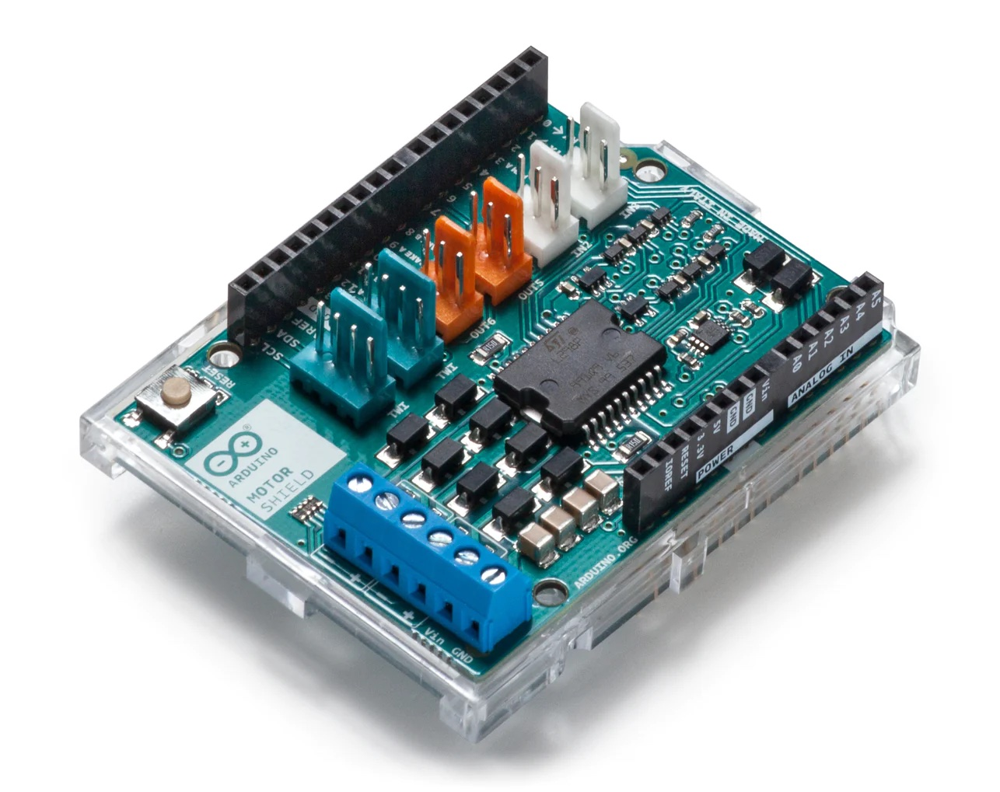

Motor Shield
A Motor Shield lets you drive two DC motors with your Arduino board, controlling the speed and direction of each one independently. You can also measure the motor current absorption of each motor, among other features.
We use this Arduino motor shield.

Pin Mapping
Each motor is controlled by a set on pins that are garhtered into channels. There are 2 channels: A and B. Below their respective pins and how they map to the Adafruit Metro ESP32-S2 board.
Motor Channel A
| Role | Metro ESP32-S2 Pin Number | Comment | Arduino Pin Number |
|---|---|---|---|
| Direction | 21 | HIGH = forward, LOW = backward | 12 |
| Break | 14 | HIGH = stop motor | 9 |
| Speed | 8 | Int between 0 and 255 | 3 |
| Current | A0 | Consumed current between 0 and 1023 | A0 |
Motor Channel B
| Role | Metro ESP32-S2 Pin Number | Comment | Arduino Pin Number |
|---|---|---|---|
| Direction | 42 | HIGH = forward, LOW = backward | 13 |
| Break | 13 | HIGH = stop motor | 8 |
| Speed | 16 | Int between 0 and 255 | 11 |
| Current | A1 | Consumed current between 0 and 1023 | A1 |
Specifications
- Operating Voltage: 5V to 12V
- Drives 2 DC motors or 1 stepper motor
- Max current: 2A per channel or 4A max (with external power supply)
- Current sensing: 1.65V/A